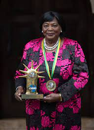

The wife of The First President of Kenya who liberated Kenyans from colonialists

The First Lady of the Republic of Kenya
- BORN: 24th June 1933 (age 90yrs) Kiambu County
- GENDER: FEMALE
- SPOUSE: Jomo Kenyatta (1951 - 1978)
- CHILDREN
- Uhuru Kenyatta
- Muhoho Kenyatta
-
Christina Pratt
- Ann Nyokabi Muthama
- Uhuru Kenyatta
- GRANDCHILDREN
- Jaba Kenyatta
- Ngina Kenyatta
- Jomo Kenyatta
- Jaba Kenyatta
- OCCUPATION: The First Lady of Kenya (1964 - 1978)
- NATIONALITY: Kenyan